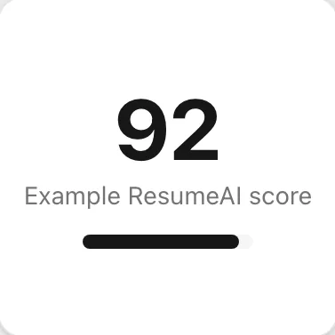

ATS share, from ResumeAI data
Founder. Built solo.
ResumeAI
AI-powered ATS resume optimizer: ATS compatibility scoring, Claude-powered bullet rewriting, AI cover letter generation, PDF/DOCX export and a companion Chrome extension. Reached active users across 7+ countries with 80%+ week-over-week new-user growth.
Next.js, TypeScript, Supabase, Claude API, Stripe, Chrome extension